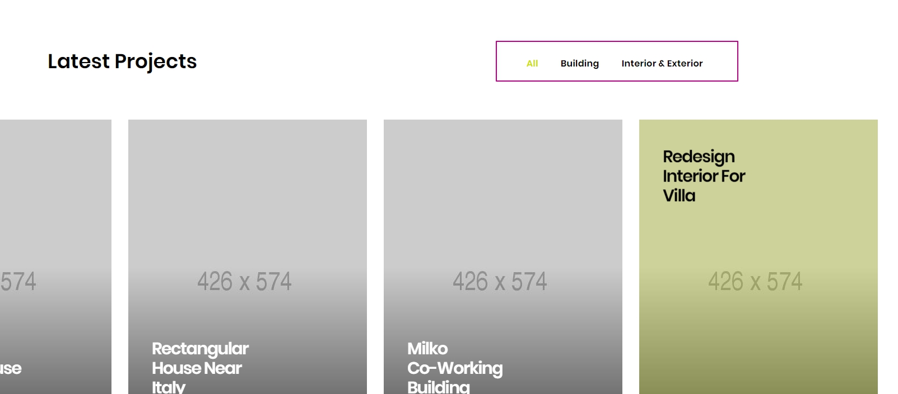
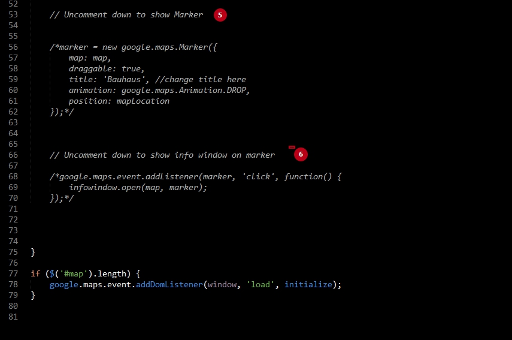
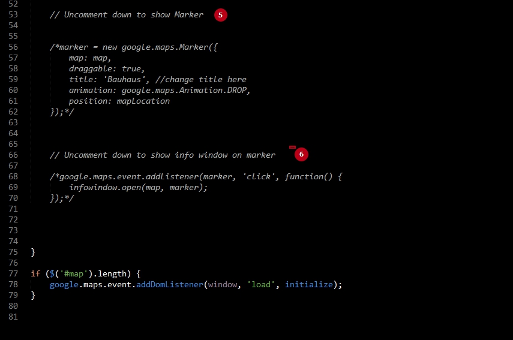

Bauhaus
Bauhaus - OnePage Architecture & Interior Template
- created: 04/03/2019
- by: Murren
Change Logo
1. Change brand image
2. Change brand name
3. Change brand text description
index.html:
Don't forget to change the white logo brand-white.png. It's' needed for dark versions
index-fullpage.html
Scroll animation
Animation on scroll build with WOW.js plugin and animate.css.
Home Classic
How to add or change animation?
index.html:
1. Add class wow to element
2. Choose animate class from css/animate.css. You can check all animations here: animate.css
3. If you want you can set animation delay data-wow-delay
Icons
Icons from the most popular icons pack ionicons and linear Icons
ion icons:
linear icons:

Revolution Slider
Header Slideshow build with Revolution slider jquery plugin. You can find all documentation here
How to add or change animation of slides?
index.html1. Choose transition effect data-transition. All transitions effects you can find here https://www.themepunch.com/revsliderjquery-doc/slide-transitions/
data-slotamount used in our example for slotzoom-horizontal transition.
2. Choose your slide image. Slide images in images/slider folder.
3. You can change or disable parallax image effect on scroll
How to change text of slides
index.html1. Title you can change in Layer 5
2. Category you can change in Layer 6
3. Link See project you can change in Layer 7
Layer 1, Layer 2, Layer 3 and Layer 4 used for yellow decoration lines,
data-x, data-y, data-hoffset, data-voffset used to set position of each Layer. You can find all documentation here here
Latest Projects
Carousel build with owl carousel plugin. Full documentation you can find via offical site of plugin here
How to change image and text of carousel item?
index.html
1. These classes are required to initialize the carousel via jquery. Carousels Initialize you can find in js/scripts.js folder. To modify options, follow official documentation of plugin here
2. Change thumbnail image, they are located in images/projects folder with sizes 426x574px
3. Change title and description of carousel element
How to customize modal window?
Modal window build with magnific popup jQuery plugin, you can find documentation here:
Each project has a link ID to it's modal window:
Find this element ID:
1. Change image, they are located in images/projects folder with sizes 680x680px
2. Change title and description
3. Change project details
4. Change social links if you want to use it.
Project filter:

How it works?1. These classes are required to initialize filter via jquery. Filter Initialize you can find in js/scripts.js folder.
2. Write category name in data-filter
3. Copy category name in carousel item class
Latest Projects FullPage
index-fullpage.html
When we hover on the project block the background changes
How it works?
We have 6 project boxes, so we have to create 6 blocks with class section-bg and add background image
Modal window
Modal works like on index.html. Each project has a link ID to it's modal window:

FullPage Structure
FullPage works with jQuery Page Piling plugin, you can find full documentation of this plugin on github
index-fullpage.htmlStructure:
1. Class pagepiling required to initialize page piling plugin via jQuery, you can find it in file js/scripts.js
2. Class pp-scrollable required to use on each sections
3. Use class section-white for white sections with no bacgkround.
Then the navigation, header will be dark when we scroll on white section!
Change map
How to change the map?
Go to the js folder and open gmap.js
1. Change coordinates: latitude and longitude
Watch video "how to get google maps latitude longitude". Video
2. If needs, change zoom of the map
3. Change address details
4. If needs, uncomment marker to show it
5. If needs, uncomment info window which will be open on marker click
 

Send form
Open mail.php and change the current email example@gmail.com to your email address
Credits
jQuery http://jquery.com/
Bootstrap http://getbootstrap.com/
Smooth scroll https://github.com/cferdinandi/smooth-scroll
Page Pilling http://alvarotrigo.com/pagePiling/
Revolution slider https://revolution.themepunch.com/jquery/
Wow.js http://mynameismatthieu.com/WOW/OWL Carousel https://owlcarousel2.github.io/OwlCarousel2//
jQuery validate https://github.com/jzaefferer/jquery-validation
Google maps https://developers.google.com/maps/
Animate.css https://daneden.github.io/animate.css/